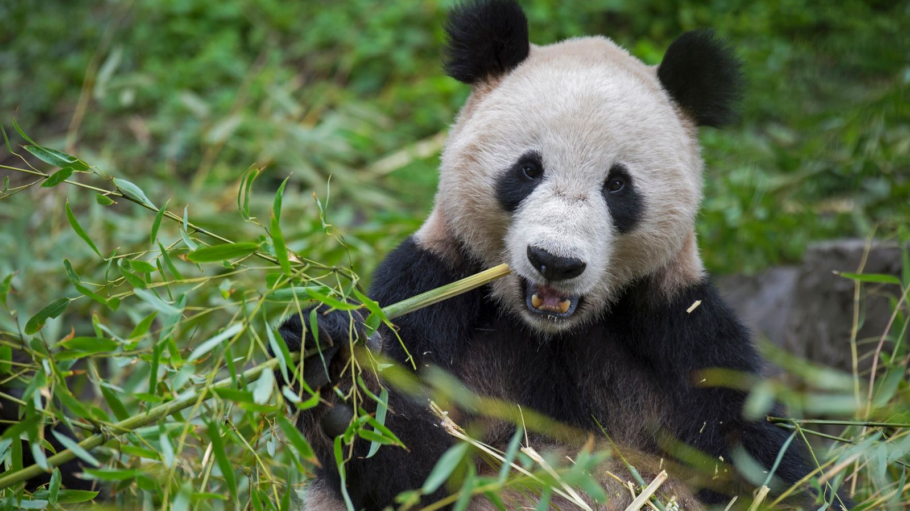

El Oso Panda
El oso panda gigante (Ailuropoda melanoleuca) es una especie distintiva y emblemática nativa de las montañas de China. Caracterizado por su pelaje blanco y negro, es un símbolo de la conservación de la vida silvestre. Su dieta se basa principalmente en bambú, aunque ocasionalmente consume pequeños animales. Aunque son solitarios por naturaleza, su apariencia tierna y su comportamiento tranquilo han cautivado la atención del mundo. Sin embargo, su hábitat está amenazado por la pérdida de bosques de bambú y su conservación es esencial para preservar esta especie única.
